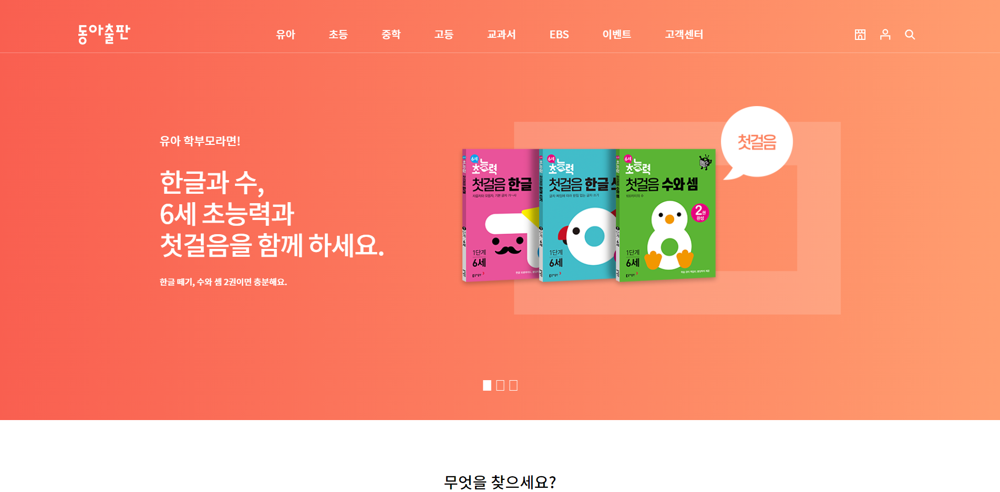

Introduction
- 이름 : 김재영
- 나이 : 32살 (1990년생)
- 주소 : 경남 김해시
- 공부블로그 : blog.naver.com/dacapolin
- Git-hub : github.com/wafu-alt
- 이메일 : dacapolin@naver.com
- 연락처 : 010-6660-7539
- 교육수료 : 부산IT교육센터 2021.05 ~ 2021.10 수료
- 경력사항 : 진성이엔씨 2014.05 ~ 2017.06 (사원,설계팀)
- 최종학력 : 연암공업대학 2008.02 ~ 2013.02 졸업
-
HTML - 85%
-
CSS - 80%
-
jQuerys - 25%
-
Photoshop - 65%
-
ILLUSTRATOR - 60%
Portfolio Works
-

반응형 웹 프로젝트
-
웹 프로젝트
History
-
-
-
- [개인]반응형 웹 프로젝트
- 주제와 컨셉을 정한 후,
디자인하고 그에 걸 맞는 반응형 코드를 사용했습니다.
CSS @media쿼리 및 magnific-popup 플러그인 활용
-
-
-
- [클론]아쿠아플라넷63
- 풀페이지 플러그인 이해와 활용
-
-
-
- [클론]오늘 레스토랑
- 반응형과 풀페이지 플러그인의 활용
-
-

-
- [클론]동아출판
- 부트스크랩 플레임워크를 이용한 활용
-
-
-
- [클론]롯데호텔
- 반응형의 기초
@media쿼리를 활용한 스크린 크기에 대한 변화 적용
-
-
-
- [개인]웹 프로젝트
- 주제와 컨셉을 잡고 처음부터 끝까지 웹페이지 만들기
슬라이드 플러그인과 오픈그래프, 파비콘 활용
서브페이지 생성
-
-
-
- [클론]오설록
- meta 태그를 이용한 오픈그래프 작성
파비콘 사용, cusuor:pointer를 이용
input태그 활용
-
-
-
-
- [클론]대학생 아시아 대장정
- slick-slide 플러그인 활용과 호버시 각 종 효과 응용
-
-

-
- [클론]써브웨이
- jquery를 이용한 2차메뉴 반응 활용
-
-
-
- overflow 활용
- hidden속성을 활용하여 호버시 확대되게 보이게 응용
transition을 이용하여 호버시 아래에서 위로 올라오는 박스 응용
-
-
-
- [클론]동국제약
- transform 속성, 활용
transition 활용
animation 활용
background fiexed 활용
-
-
-
- [클론]창업진흥원
- 1차메뉴와 2차메뉴 사용시 자식선택자 활용
.gnb > li:hober > depth2
linear-gradient 활용
opacity 활용
-
-
-
- [클론]KG그룹
- 마우스 호버시 1차메뉴에서 2차메뉴가 보이게 활용
동영상 배치 활용
-
-
-
- [클론]이디야커피
- position에 대한 속성 활용
relative , absolute
z-index로 겹치는 순서 개념활용
-
-
-
- [클론]삼성물산
- float 실전활용과 더불어
clearfix::after {content:""; display:block; clear: both}
를 활용하여 줄바꿈에 사용
-
-
-
- [클론]경기도경제과학진흥원
- CSS 의사클래스
:nth-child() 활용
html 레이아웃 활용
마우스 호버에 따른 변화 활용
-
-
-
- css파일 분리
- background url활용
width에 calc 활용
-
-
-
- css 가상요소
- ::after활용과 background활용
-
-
-
- CSS 레이아웃
- 배치요소 float 활용
clear요소를 활용하여 float배치요소 줄바꿈 활용
-
-
-
- 기초 HTML과 CSS
-
HTML 태그활용
CSS 선택자, 속성 활용
블럭요소 및 박스요소 중앙배치